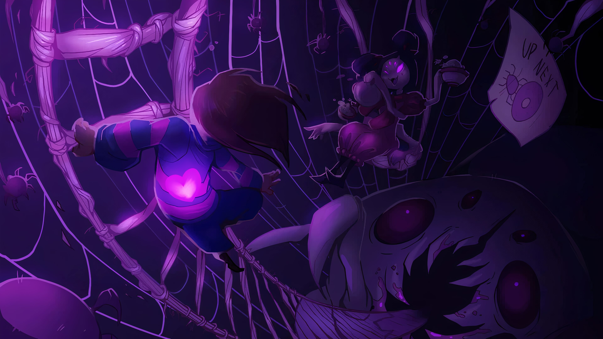
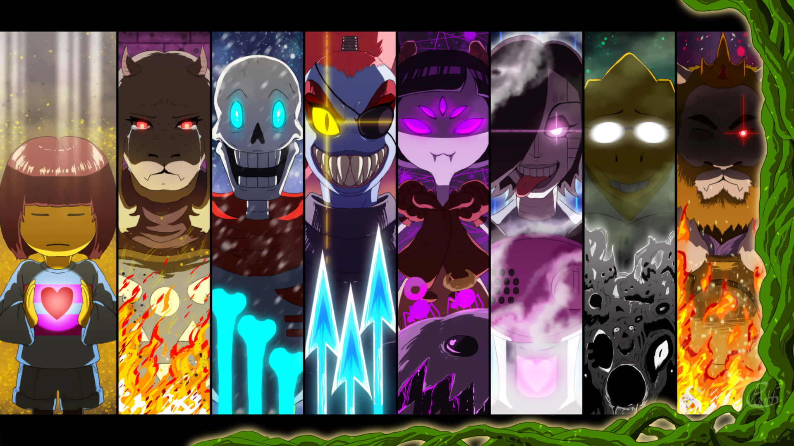
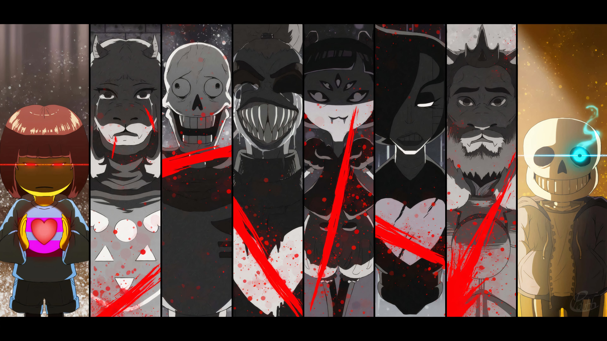

Combat That Makes You Think

Unlike traditional RPGs, Undertale allows you to choose whether to fight or show mercy. Every enemy encounter is a moral test: Will you destroy your foes or find a way to understand and spare them?
In combat, players dodge incoming attacks in a "bullet-hell" style mini-game. The variety of attacks keeps players on their toes and adds excitement even in non-violent runs.
Multiple Play Styles

Undertale supports three main routes: Pacifist, Neutral, and Genocide. Each one tells a drastically different story depending on the player’s choices.
- Pacifist: Befriend everyone. No one dies. Discover the deepest lore and most hopeful ending.
- Neutral: A mix of choices. The ending depends on who lived or died.
- Genocide: Kill every character. Face intense battles and discover the darkest parts of the story.
Meta Elements

Undertale remembers what you do—even after resetting. Characters may comment on past actions from different playthroughs, making each decision feel permanent and significant. This "fourth wall awareness" is one of the game's standout features.